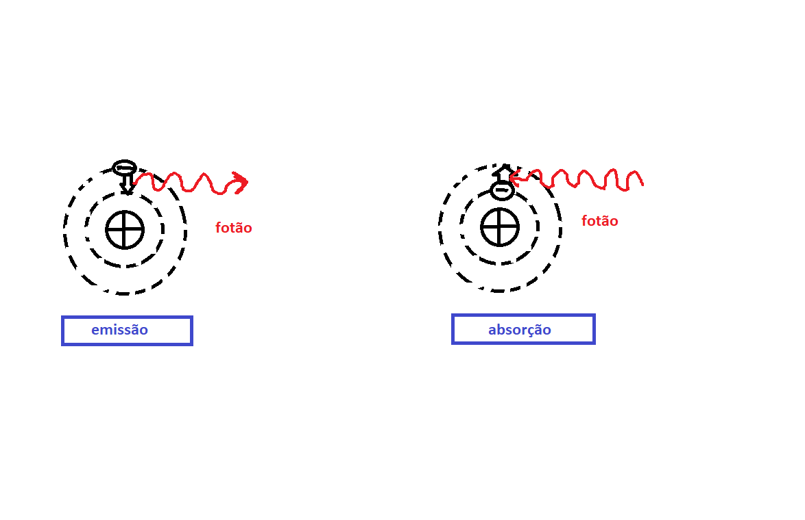

Espetro atómico
O aparelho para obter o espetro atómico de um elemento consiste numa fonte onde de realiza uma descarga elétrica que passa através de uma região que contém um gás monoatómico. Devido a esta descarga elétrica é emitida radiação eletromagnética que é colimada. De seguida atravessa um prisma (rede de difração), sendo assim decomposta em seu espetro de comprimentos de onda.
Ao contrário do espetro continuo da radiação eletromagnética emitida, por exemplo pela superficíe dos sólidos a altas temperaturas, a radiação eletromagnética emitida pelos eletrões livres está concentrada num conjunto de valores discretos.
Cada átomo terá o seu próprio e único espetro atómico de emissão e absorção.
Espetro atómico do Hidrogénio
O espetro atómico do hidrogénio possui 4 linhas com comprimentos de onda distintos. Balmer encontrou empiricamente uma expressão que os realciona: $$\lambda=b\frac{n^{2}}{n^{2}-4}$$ com \(b=3645.6 Å\) e \(n=3,4,5,6\)
A fórmula de Balmer foi transformada por Rydeberg em termos do inverso do comprimento de onda \(\frac{1}{\lambda}=\frac{4}{b}\left(\frac{1}{2^{2}}-\frac{1}{n^{2}} \right)\). Sendo um caso especial da expressão generalizada: $$\frac{1}{\lambda}=R_{H}\left(\frac{1}{n^{2}}-\frac{1}{m^{2}} \right)$$ onde \(n,m\) são inteiros com \(m>n\) e \(R_{H}\sim109.737 cm^{-1}\)
É possível observar as seguintes séries de Hidrogénio:

Modelo de Thomson
O modelo de Thomson,também conhecido por modelo de "pudim de passas" consiste na tentativa de descrição do modelo atómico. Neste modelo os eletrões carregados negativamente estariam localizados no interior de uma distribuição continua de carga positiva. A forma da distribuição da carga positiva seria esférica e desta foram os eletrões assemelhavam-se às passas no "pudim de passas". O número de eletrões seria próximo do número atómico. O átomo seria eletricamente neutro na sua totalidade. As forças presentes seriam forças elétricas entre os eletrões e o fundo de carga positiva.
Em um átomo no seu estado de menor energia os eletrões estariam fixos na sua posição de equilibrio. Nos seus estados excitados os eletões vibrariam em torno das posições de equilibrio. Contudo os resulatdos não concordam com as linhas espetrais obtidas nos espetros atómicos, mas a ordem de grandexa do átomo está correta.

Modelo de Rutherford
Rutherford em 1911, fez colidir particulas alpha(núcleos de Hélio) com uma folha metálica e observou que algumas partículas alpha voltavam para trás. O resultado obtido não vai de encontro à previsão de Thomson onde as particulas alpha deveriam seguir em frente pois a interação com a geleia positivamente carregada seria muito fraca.
Os resultados da experiência de Rutherford indica a existência de um núcleo muito pequeno de carga elétrica positiva. Desta forma no modelo Rutherford, toda a massa do átomo concentrada no núcleo de carga positiva de dimensão muito inferior ao átomo. Os eletrões orbitram em torno do núcleo positivo e com uma elevda massa. As forças eletroestáticas presentes resultam da interação de núcleo-eletrão e eletrão-eletrão.
Assim a força elétrica núcleo-eletrão é atrativa e centripeta: $$F_{e}=F_{c} \Leftrightarrow \frac{e^{2}}{4\pi\epsilon_{0}r^{2}}=\frac{mv^{2}}{r}$$ O núcleo de carga positiva cria um campo elétrico, \(E= \frac{1}{4\pi\epsilon_{0}r^{2}}\) e potencial \(V= \frac{1}{4\pi\epsilon_{0}r}\). Assim a energia potencial é \(E_{p}=eV =-\frac{e^{2}}{4\pi\epsilon_{0}r}\)
Pela expressão anterior obtemos que: $$mv^{2}=\frac{e^{2}}{4\pi\epsilon_{0}r}=-E_{p}$$
A energia total do eletrão é a soma da energia cinética com a enrgia potencial: $$E=E_{c}+E_{p}=\frac{1}{2}mv^{2} + E_{p}=-\frac{1}{2}E_{p} + E_{p}=\frac{1}{2}E_{p}$$
Contudo segundo a física clássica o eletrão está em movimento acelerado. Num movimento acelerado o eletrão emite radiação eletromagnética, então estará aperder energia \(E<0\). Então a distância ao núcleo diminui também, até que colapsa com o núcleo. Matemáticamente observa-se por: $$E_{t}=-\frac{1}{2}\frac{e^{2}}{4\pi\epsilon_{0}r}$$
Modelo de Bohr
Borh desenvolveu um modelo que exlicava a existência das linhas espetrais. Neste modelo ele considerou os seguintes postulados: [1]
1) Um elétrão em um átomo se move em uma órbita circular em torno do núcleo sob influência da atração coulombiana entre o núcleo-eletrão, obedecendo às leis da mecânica clássica.
2) Em vez da infinidade de órbitas que seriam possíveis segundo a mecânica clássica, um elétrão só pode se mover em uma órbita na qual seu momento angular orbital \(L\) é multiplo inteiro de \(\hbar\).
3) Apesar de estar constantemente acelerado, um eletrão que se move em uma dessas órbitas possíveis não emite radiação eletromagnética. Portanto sua energia total \(E\) permamece constante.
4) É emitida radiação eletromagnética se um eletrão, que se move inicialmente sobre uma órbita de energia total \(E_{i}\), muda seu movimento descontinuamente de forma a se mover em uma órbita de energia total \(E_{f}\). A frequência da radiação emitida \(v\) é: \(v=\frac{|E_{i}-E_{f}|}{h}\)
Segundo o postulado 2, vêm a quantificação do momento angular: $$\vec{L}=\vec{r}\times\vec{p}=rp\hat{L}=rmv\hat{L}$$ $$L_{n}=rmv=\frac{n}{2\pi}h=n\hbar , n=1,2,3$$
Como visto anteriormente, \(mv^{2}=\frac{e^{2}}{4\pi\epsilon_{0}r}\), onde vêm: $$rmvv=\frac{e^{2}}{4\pi\epsilon_{0}} \Leftrightarrow Lv=\frac{e^{2}}{4\pi\epsilon_{0}} \Leftrightarrow v=\frac{1}{4\pi\epsilon_{0}}\frac{e^{2}}{L}$$
$$v_{n}=\frac{1}{4\pi\epsilon_{0}}\frac{e^{2}}{n\hbar} , n=1,2,3...$$
A partir da expressão da força centrípeta, obtemos \(r=\frac{1}{4\pi\epsilon_{0}}\frac{e^{2}}{mv^{2}}\), substuimos a expressão destacada anteriormente de \(v\) e obtemos:
$$r_{n}=n^{2}a_{0}, a_{0}=\frac{4\pi\epsilon_{0}\hbar^{2}}{me^{2}}$$
Anteriormente vimos que \(E=\frac{1}{2}E_{p}\), pelo que vêm \(E=-\frac{1}{2}\frac{e^{2}}{4\pi\epsilon_{0}r}\), substituindo o \(r\):
$$E=-[\frac{1}{4\pi\epsilon_{0}}]^{2}\frac{me^{4}}{2(n\hbar)^{2}}=\frac{E_{1}}{n^{2}}$$
onde \(E_{1}= -[\frac{1}{4\pi\epsilon_{0}}]^{2}\frac{me^{4}}{2(\hbar)^{2}}\). Por fim obtemos, a quantificação da energia do eletrão:
$$E_{n}=\frac{E_{1}}{n^{2}}$$
Sabemos que existe emissão/absorção de radiação nas transições entre niveis, pelo que \(E=hv=h\frac{c}{\lambda}\),pelo que: $$E=-\frac{R}{n^{2}}hc$$, por isso vêm: $$R=R_{\infty}=[\frac{1}{4\pi\epsilon_{0}}]^{2}\frac{me^{4}2\pi^{2}}{\hbar^{3}c}$$
De reforçar a ideia do postulado 4 que a energia libertada/absorvida quando eletrão transita para outro nível de energia é dado por: $$hv=|E_{i}-E_{f}|$$
Substituindo a expresão obtida anteriormente com a constante de Rydeberg, R, vêm a expressão obtida por Balmer: $$\frac{1}{\lambda}=R\left(\frac{1}{n_{f}^{2}}-\frac{1}{n_{i}^{2}} \right)$$
Por fim observamos que para a emissão: \(E_{i}-E_{f}>0\) e para a absorção: \(E_{i}-E{f}<0\)
Átomos Hidrogenóides
Para átomos hidrogenóides, átomos que possuem apenas um eletrão, basta fazer uma pequena alteração na força colombiana. O eletrão move-se em órbitas circulares à volta do núcloe com carga positiva \(Ze\). Assim aplicando esta alteração na igualdade \(\frac{Ze^{2}}{4\pi\epsilon_{0}r^{2}}=\frac{mv^{2}}{r}\), vêm: $$v_{n}=\frac{1}{4\pi\epsilon_{0}}\frac{Ze^{2}}{n\hbar} , n=1,2,3...$$ $$r_{n}=n^{2}\frac{a_{0}}{Z}, a_{0}=\frac{4\pi\epsilon_{0}\hbar^{2}}{me^{2}}$$ $$E=-\frac{R_{\infty}}{n^{2}}hcZ^{2}$$ $$\frac{1}{\lambda}=R_{\infty}Z^{2}\left(\frac{1}{n_{f}^{2}}-\frac{1}{n_{i}^{2}} \right)$$
Efeito da massa finita
Até agora consideramos que a massa do núcleo atómico fosse infinitamente grande qunado comparada com a massa do eletrão. Contudo pode não ser assim tão desprezável quando realizamos medições com maio precisão. As equações de movimento são as mesmas apenas temos de substituir a massa, \(m\), pela massa reduzida \(\mu\). $$\mu=\frac{mm'}{m+m'}$$
Desta forma vêm o seguinte resulatdo para a constante de Rydeberg: $$R_{H}=R_{\infty}\frac{1}{1+\frac{m}{m'}}$$
Fazendo a mesma substituição na energia de ionização vêm: $$E=-\frac{R_{\infty}}{n^{2}}hc\frac{1}{1+\frac{m}{m'}}$$
O efeito global vêm da seguinte forma: $$E=-\frac{R_{\infty}}{n^{2}}hc\frac{1}{1+\frac{m}{m'}}Z^{2}$$
A ideia de estado estacionário pode ser generalizada a outros átomos. Mas não foi possível construir um modelo quantitizado para outros átomos. A experiência de Frank-Hertz mostra a existência de estados estacionários para outros átomos.